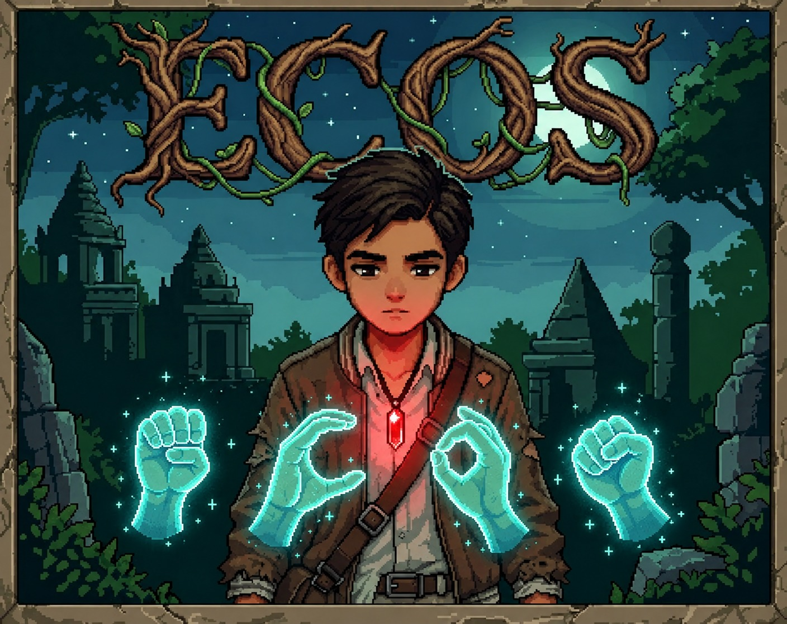
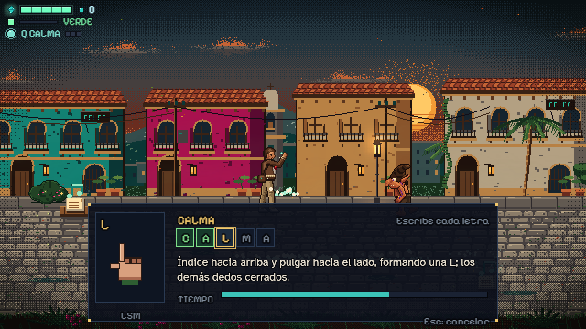
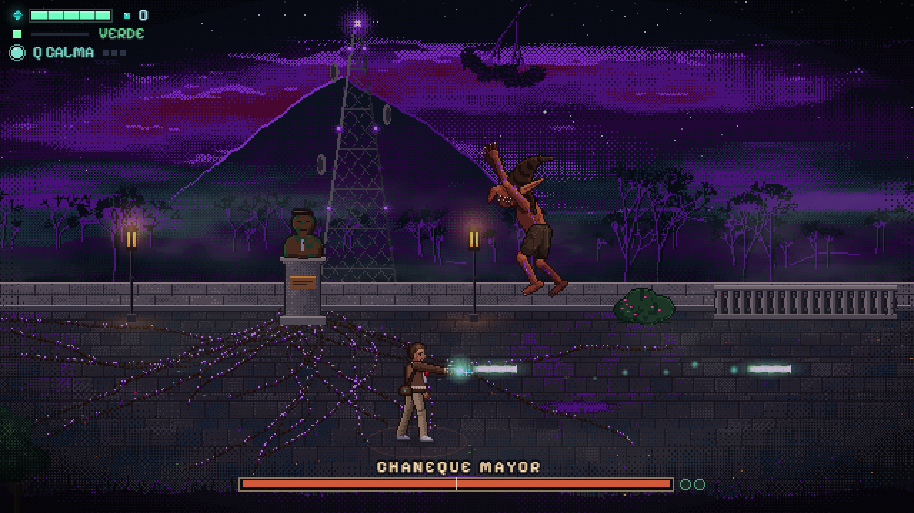
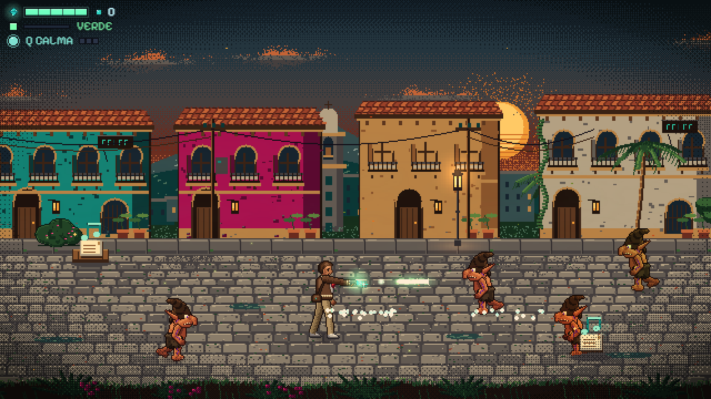
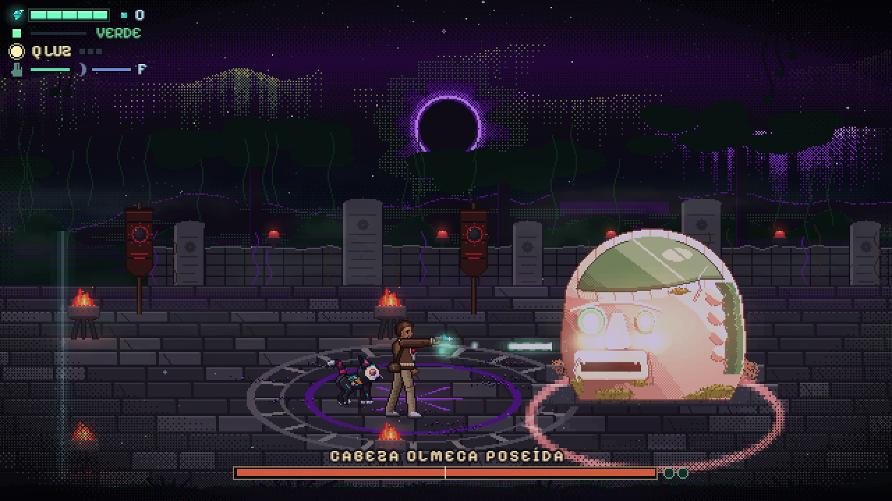
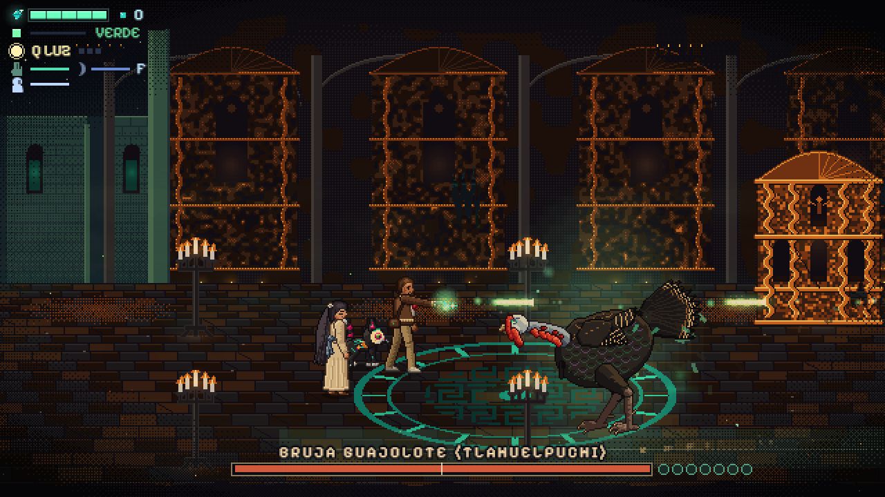
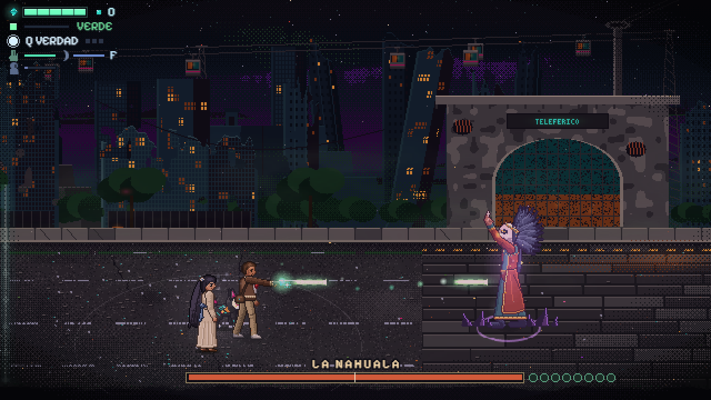
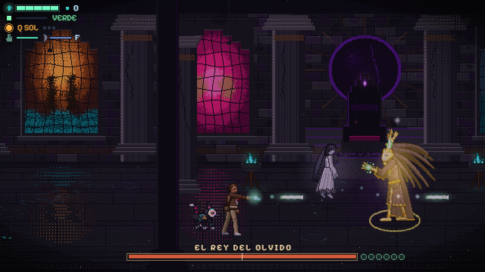
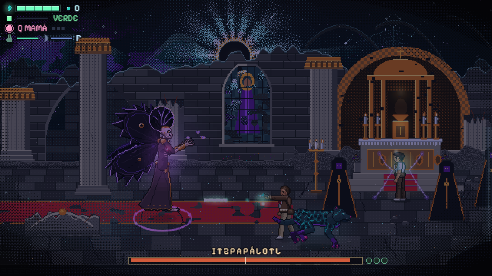
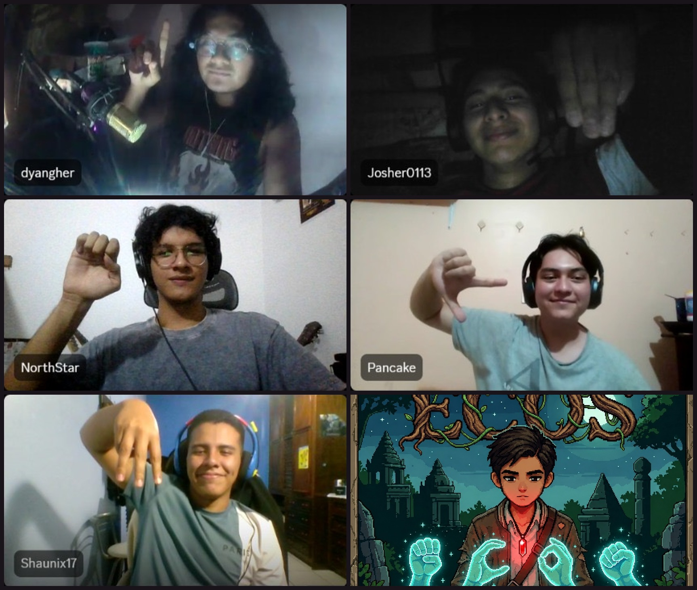

Qué es ECOS
Tu mano es el hechizo.
Un juego de acción y exploración en 2D donde lanzas conjuros deletreando en Lengua de Señas Mexicana frente a tu cámara.
La historia
Su madre desaparece. Le deja sus señas.
Ella es sorda y criptógrafa. Él solo tiene el Códice de las Voces y el idioma que ella le enseñó.
Para encontrarla cruza un México retrofuturista colapsado, donde la Cofradía del Espejo Negro corrompe a los seres del folclor.
La mecánica
- CALMA
- tranquiliza a los chaneques
- LUZ
- purifica a los espíritus
- MEMORIA
- devuelve el recuerdo a las bestias
- VERDAD
- desenmascara a los nahuales
- DESCANSO
- da paz a las almas atadas
- MAMÁ
- la última seña del juego

Cultura, identidad y patrimonio
La cultura está en la mecánica.
La LSM es la lengua de miles de personas sordas en México. Aquí es la única forma de pelear.
Chaneques, nahuales, la Llorona y la Bruja Guajolote no se matan: se purifican. Cada ser responde a un conjuro distinto.
Los personajes
Veinticuatro personajes, dibujados pixel a pixel.
El viaje
Siete niveles, de Veracruz a Jalisco.
Xalapa → Tuxtla → Catemaco → Oaxaca → CDMX → CDMX → Guadalajara
Cada parada tiene su escenario pintado capa por capa, su jefe y su música.
El misterio del Parque Juárez
1 / 7 · Xalapa, VeracruzJefe · Chaneque Mayor
La niebla verde cubre el parque. Una antena de la Cofradía enloquece a los chaneques. Aquí se aprenden CALMA y PROTECCIÓN.

La música perdida
2 / 7 · San Andrés TuxtlaEl fandango
Cinco estrofas de son jarocho perdidas por el pueblo. Al reunirlas, el fandango suena por capas y aprendes VOZ.

El ritual del lago
3 / 7 · CatemacoJefe · Cabeza Olmeca
Brujos, encapuchados y espíritus. Aparece Balam, el gato alebrije, y la cabeza colosal despierta en tres fases.

Los tejidos de la memoria
4 / 7 · OaxacaJefa · Bruja Guajolote
Tres artesanos recuperan sus recuerdos con MEMORIA. En Santo Domingo, la bruja se transforma en ave.

De la Isla de las Muñecas a Reforma
5 / 7 · Ciudad de MéxicoJefa · La Nahuala
Muñecas poseídas en Xochimilco y nahuales infiltrados en la ciudad. VERDAD revela quién es quién.

El Rey del Olvido
6 / 7 · Ciudad de MéxicoJefe · Rey del Olvido
Su corona se rompe con SOL o FUEGO y su sello con MEMORIA. María se vuelve la Llorona y pelea a tu lado.

La trampa y el eclipse final
7 / 7 · GuadalajaraJefa · Itzpapálotl
La mariposa de obsidiana. Deletreas MAMÁ y tu madre la detiene desde el altar. Después, por fin, hablan.

Cómo lo hicimos
Hecho en una jam.
Usamos IA y lo declaramos: Claude Code para programar, Codex y Nano Banana para arte de apoyo. La historia, el diseño, la dirección y la música son del equipo.
Para todos
Se puede terminar sin cámara.
Teclado completo, ventanas de deletreo más largas, menos efectos en pantalla y una fuente pensada para leer.
Corre en el navegador y en Windows.
El equipo
Listick Games
- Luis David Sosa FernándezDesarrollo principal, dirección narrativa, diseño de niveles y jefe de proyecto
- Dylan Antonio Hernández GregorioDirección de arte y diseño de personajes
- Miguel Ángel Marcelo TaracenaGuion, personajes, mecánicas, niveles y apoyo en desarrollo
- Gonzalo Mendoza HerreraDiseño de audio, soundtrack, pruebas y QA
- José Manuel Hernández PachecoConcept art y pruebas

GAMES Dream Team
Gracias. Juéguenlo en itch.io.